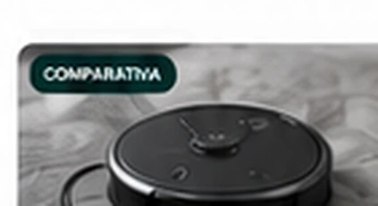

Mejores robots aspiradores de 2026: cómo elegir bien
Un robot no se compra por la cifra de succión más alta. La diferencia real suele estar en cómo navega, evita obstáculos, vuelve a la base y cuánto trabajo te deja después.

1. Navegación: que cubra la casa sin perder tiempo
Los robots más útiles construyen rutas coherentes y permiten dividir la vivienda por habitaciones o zonas. Si tu casa tiene muchas estancias, mapas guardados, zonas prohibidas y limpieza por habitación aportan más que una potencia máxima que apenas usarás.
2. Obstáculos: cables, calcetines y mascotas importan
La detección de objetos puede reducir atascos, pero ningún sistema convierte un suelo lleno de cables en un entorno perfecto. Si tienes mascotas o niños, valora especialmente cómo identifica objetos pequeños y si permite marcar zonas problemáticas desde la app.
3. Fregado: mantenimiento ligero, no milagros
Un paño húmedo puede ayudar a mantener el suelo entre limpiezas, pero no equivale automáticamente a fregar a mano. Los sistemas que elevan mopas, regulan agua o lavan los paños en la base reducen tareas, aunque también elevan precio, tamaño y mantenimiento.
4. Base de autovaciado: comodidad a cambio de espacio
El autovaciado tiene sentido si quieres tocar menos el depósito o tienes mascotas. La contrapartida es una base mucho más grande y consumibles adicionales en algunos sistemas. Mide el hueco antes de comprar: no solo la altura del robot.
5. Mantenimiento: cepillos y sensores también se ensucian
Incluso un robot muy autónomo exige retirar pelos, limpiar rodillos, sensores y ruedas y cambiar piezas de desgaste. La facilidad para acceder a estas partes es un criterio de compra tan importante como la app.
Si tienes mascotas
Prioriza un cepillo que gestione bien el pelo, depósito o base con capacidad suficiente y navegación fiable alrededor de comederos y objetos. La limpieza frecuente y programada suele ser más útil que depender de una sesión ocasional a máxima potencia.
Lo que nadie te cuenta
Cuanto más automática es la base, más piezas tiene que mantener. Lavado de mopas, depósitos de agua, bolsas, bandejas y secado reducen trabajo diario pero añaden puntos de limpieza y consumibles.
La app forma parte del producto. Si los mapas, rutinas o zonas son difíciles de gestionar, acabarás usando menos funciones. Una interfaz clara puede valer más que una característica llamativa que nunca configures.
Qué priorizar según tu casa
- Piso pequeño: navegación ordenada y base compacta.
- Casa grande: mapas fiables, autonomía y reanudación automática.
- Mascotas: pelo, depósito, autovaciado y limpieza de rodillos.
- Muchas alfombras: detección de superficies y gestión inteligente del fregado.
- Muchos objetos en el suelo: detección de obstáculos y zonas restringidas.
Errores frecuentes
- Comprar por una cifra de Pa sin mirar navegación ni cepillo.
- Dar por hecho que “friega” significa que elimina manchas secas.
- No medir la base.
- No revisar el precio de bolsas, mopas, filtros y cepillos.
- Olvidar que los cables siguen siendo uno de los peores enemigos de un robot.
Preguntas frecuentes
¿Merece la pena una base de autovaciado?
Sobre todo si limpias a menudo, tienes mascotas o quieres espaciar el vaciado manual. Si tienes poco espacio o no te importa vaciar el depósito, puede ser prescindible.
¿Un robot sustituye a una aspiradora convencional?
Suele funcionar mejor como mantenimiento frecuente. Para sofás, esquinas difíciles, escaleras o limpiezas profundas seguirás necesitando otra herramienta.
¿El fregado automático sustituye a la fregona?
No siempre. Puede mantener el suelo y reducir frecuencia de fregado manual, pero la capacidad ante manchas difíciles depende mucho del sistema y del tipo de suelo.